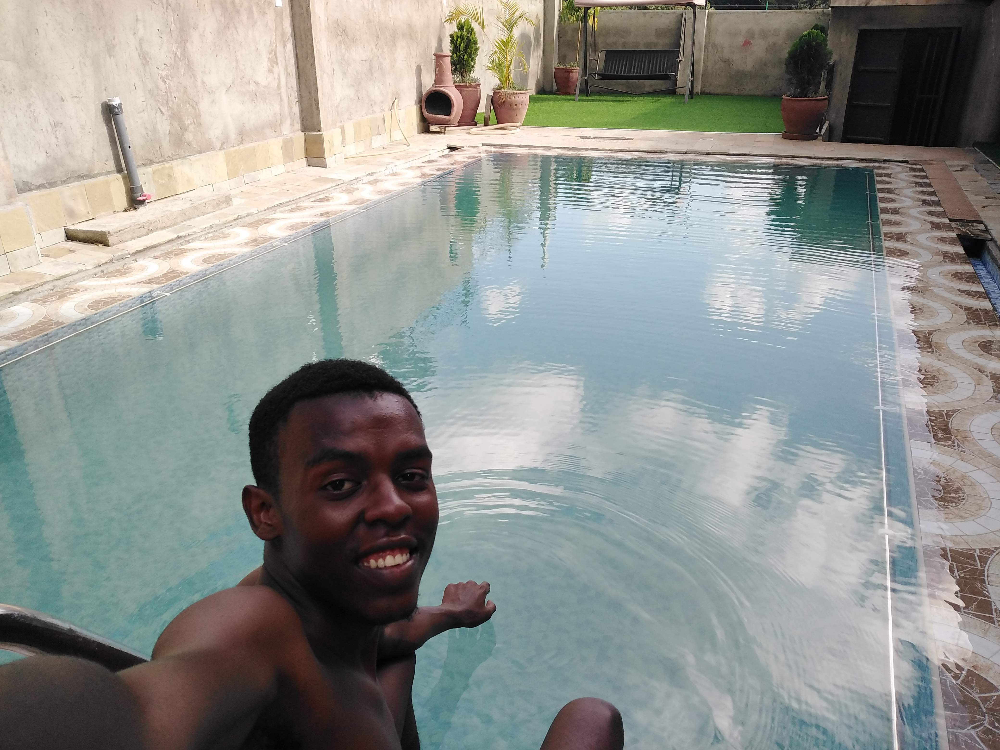

.jpeg)


My name is Brian Njogu. I am a 4th year student at JKUAT undertaking a bachelor's degree in Supply chain Mangement and a prep student at Moringa School. My studies at JKUAT were cut short due to COVID-19. Our inistitution was unale to develop an online curriculum for our group. this is one of the reasons I decided to join Moringa School and expand my knowledge in the world of computers. I have always loved computers and used them to the best of my knowledge but I have never had the understanding of code, so enrolled in Moringa to get a training on how to Code.
I can say that I am a responsible and a hard-working student. Moreover, being a sociable person, I have many friends since I like to communicate with people and get to know new interesting individuals. I also practice a partime business that deals with sale of phones laptops computers and their accesories. I started this business back in 2nd Year as a way of eaning an extra penny. When COVID came and we were stuck in the house I decided to train myself on graphics designing in youtubr tutorials and when I was confident enough I advertised myself and got a few gigs of designing posters banners, flyers and video editing as well. With the skills i will acquire at Moringa I believe it will give me a better survival chance in our world today. I like to receive and deal with challenging tasks. I am a very enthusiastic person and I think this is a strong point of mine.
I also enjoy:
I love to watch car journalist as they experiment and talk about expensive brands like Rolls Royce, Bentley, BMW and my favorite Mercedes Benz
Heres some images that represnts my hobbies and likes.